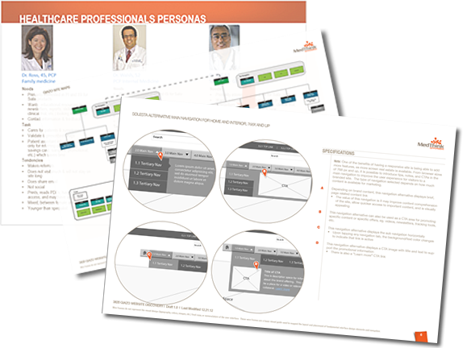

Responsible for creating new or enhanced digital experiences for agency clients. Projects include designing responsive websites for product websites, newsletters, CRM campaigns. Additional responsibilities include designing a SaaS CATeR journal application, Viva iRep iPad presentations, and creating sales support and training materials.
